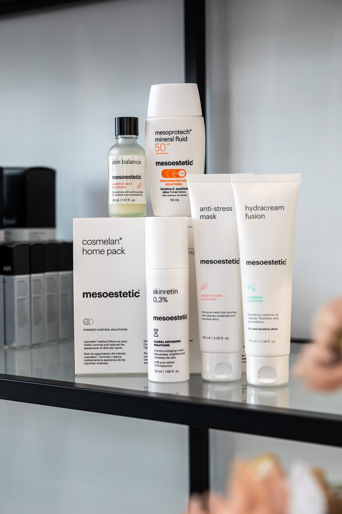
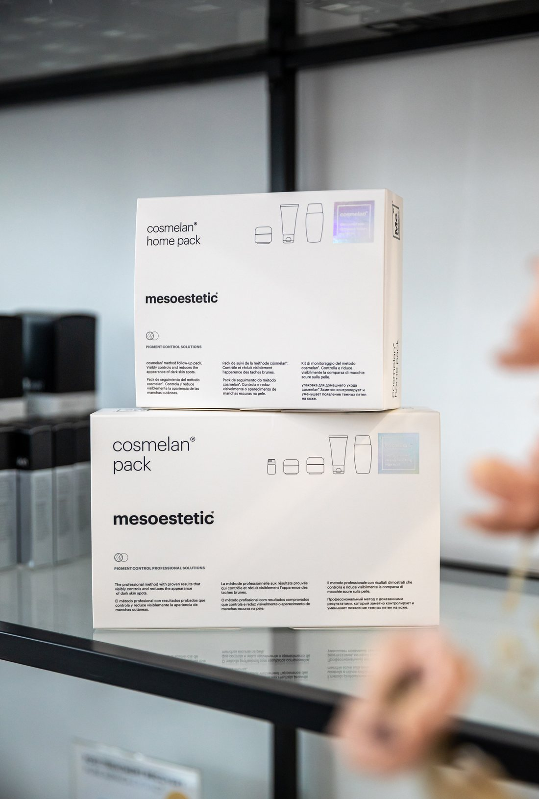

The Australian tax
Sun damage does not arrive on schedule. It sits under the skin for decades and then surfaces all at once, usually in your forties.
Take the free skin assessmentBrown patches across the cheeks and temples. An overall dullness that no amount of exfoliating shifts. Skin tone that is uneven enough that you have started wearing more foundation than you used to. Underneath it, collagen damage - because UV degrades collagen as well as triggering pigment.
The damage was done years ago. Pigment cells hold onto that injury and express it later, often prompted by a hormonal shift - which is why so many women meet their pigmentation and their perimenopause in the same year.


Because pigment is a response, not a stain. Treat the surface without addressing the trigger and it returns, sometimes worse. Anyone promising to remove it permanently in one session is selling you something.
Treat the pigment and rebuild the collagen underneath it in the same plan, then protect what we rebuild - because without that last part you are simply paying to do it again. Some of the most useful treatments here are also the gentlest, and are safe in an Australian summer, which most resurfacing is not.
What we would use
Which of these is right for you depends entirely on your face. That is what the assessment decides, and it is why Tracey will not quote you before she has looked at you.
Collagen without needles, and without a single day off.
$325 · 30 minutes Collagen & Skin QualityA Korean skin innovation, delivered where it actually works.
$395 · 45 minutes MicroneedlingAsks the skin to repair itself, then gives it what it needs to do the job.
$245 · 45 minutes Advanced Nurse TreatmentsUses your own blood to tell your skin to repair itself.
Consultation requiredEvery treatment is assessed individually. A consultation with a nurse practitioner is required before any procedure, and individual results vary.
The questions people actually ask
Some of it, yes - which is unusual. PRX-Plus and BYRYZN are safe for all skin types and all seasons. Tracey will tell you what to save for winter.
Pigment can recur, particularly with sun exposure or hormonal change. That is why sun protection is not an upsell, it is the treatment working. Tracey will be blunt with you about this.
Some treatments carry more risk in darker skin types than others, and that is exactly what the assessment is for. Tracey will not put you at risk of making pigmentation worse in order to sell you a treatment.
Usually a course rather than a single treatment, and Tracey will tell you the real number rather than the number that gets you in the door.
Free · 60 seconds · No obligation
Take the free skin assessment. Five questions, and you will get back a straight read on what is driving the change and what would actually help - whether or not you ever book with us.